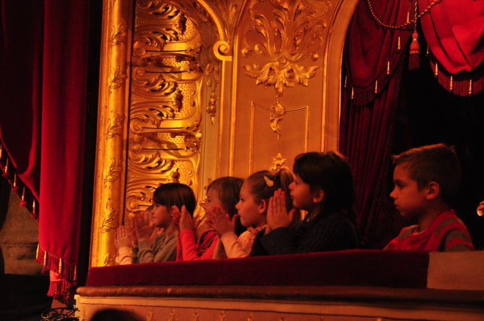

Вітаю усіх учасників і чернівецького глядача особливо: 11-денне свято театру в столиці Буковини розпочалося. Журі майже у повному склади – торішнє. Але не можу не зупинитися на одному імені із цілим списком регалій світу культури. Скажу просто: голова журі цього року – жінка-легенда для нашого театру, народна артистка України Валентина ЗИМНЯ.
Перший день пройшов без обговорення на канапі. Ніколи було, дуже маленький люфт залишався між чотирма виставами першого дня (конкурсних – лише дві…).
Алі-Баба та безкінечні розбійники
О 12.00 мелодія «Черемшини» оголосила початок першої на цьому фестивалі вистави за казкою Веніаміна Смєхова (до речі, того самого Атоса з давнього серіалу «Три мушкетери») «Алі-Баба і розбійники» у виконанні Тернопільського академічного обласного театру актора і ляльки (постановник - з. а. України Володимир Лісовий, художник Оксана Федун, музика Сергія Нікітіна та Віктора Берковського).
Вистава розпочалася ще від гарненької афішки-програмки й захопила глядацьку дітлашню з першого подиху. Та й не дивно: казка, східна, у яскравих і чудернацьких костюмах, з піснями й танцями, трохи страшнуватою печерою – хіба це не цікаво?
Як належить у казці бідний і щедрий Алі-Баба (Дмитро Татарінов) із любою дружиною Зейнаб (Катерина Шпільман) протистоять богатому брату Касимові (Юрій Коцюк) із хитрою Фатімою (Ольга Володюк).
Отаман розбійників Хасан (Богдан Братнюк) час від часу перераховує своїх сорок розбійників (яких лише п’ятеро), і ці смішні підстаркуваті й дурнуваті розбійники із кривими шаблями й шапками набакир крутяться в безкінечному хороводі для ілюзії більшої кількості.
Варто зауважити, що виконавці цих ролей – Тарас Іванків, Іван Головатюк, Микола Капшій, Петро Мрига, Олег Боков – у цій коловерті примудрюються наділити свої персонажі індивідуальними рисами, що різнять їх одне від одного і на тому запам’ятовуються.
А коли ще й усе добре закінчується, усі герої примирюються, посилаючи у зал добру надію на гарне майбутнє. Особисто мені найбільше сподобався верблюд Жамал…
Капелюшок для панни Ольги
З театрального залу глядачі плавно перемістилися під дощ на площу перед театром, але це не завадило особливо терплячим отримати задоволення від вуличної вистави Львівського академічного театру «Воскресіння» «Глорія» (автор – Ярослав Федоришин) і навіть побути у захваті від вправного ходіння акторів на ходулях.
У тому захваті якось ніхто не дістався до розмови про зміст вистави, та може, й не треба, бо вистава поза конкурсом і відбулася просто як подарунок чернівчанам. А гарний капелюшок, що його надягли на голову пам’ятника патронесі нашого театру панні Ользі Кобилянській, залишався на ній принаймні ще пізнього вечора…
Не ловіть чорних мотилів
О 16 годині глядача приймав зал Центрального палацу культури Чернівців, на якому «Театр у кошику» національного центру театрального мистецтва імені Леся Курбаса (Львів) вийняв зі свого кошика моновиставу «Білі мотилі, плетені ланцюги», створену режисером Іриною Волицькою та актрисою Лідією Данильчук (з. а. України) за текстами Василя Стефаника, щедро збагаченими народними піснями Прикарпаття і грою на автентичних інструментах самоі ж виконавиці Лідії Данильчук.
Про що розповідає вистава? – про Жінку. Адже де б вона не жила і ким би не була, жінка воліє наповнити своє життя, свою повсякденність щастям, як уміє та як розуміє його – просто любов’ю. У праці, материнстві, у збереженні родини й домівки, у пісні, у творчості… Не завжди виходить, але вона знову намагається…
У виконанні Лідії Данильчук відзначаєш дві речі: текст вистави живе не лише на її вустах, а в кожному порухові тіла актриси (до речі, дуже пластичних рухах) і те, як актриса відчуває і контролює ритм вистави (коли на сцені лише сама вона і немає партнера, за діями якого можна ловити той ритм).
Разом з Лідією Данильчук ми пережили усі перипетії життя героїні (чи героїнь), її набутки і втрати. Вистава тривала приблизно годину, але здавалося – ціле життя…
«Осіння Феєрія» у чернівецькому надвечір’ї
І ледь відпочивши від напруження «Білих мотилів…», поринаємо о 18.30 у море зовсім інших емоцій, для яких, якщо обирати одне слово, я обрала б Радість.
Київська оперета привезла феєричний (не побоюся перегуку із заголовком!) гала-концерт із найкращих номерів свого репертуару: відомі й вперше почуті арії, сцени з вистав, запальні танці, сольні номери музикантів – і усе це у прегарних вишуканих костюмах.
Вечірні сукні виконавиць – хоч на територію вручення «Оскара». Балеринки тоненькі як свічечки, а на худюсеньких співачок дивишся і думаєш «Та чим же вона співає?». І все це у безкінечному рухові і з емоційним диригуванням почергово Ігоря Ярошенка та Оксани Мадараш.
Режисер-постановник цього дійства – звісно ж, художній керівник Київської оперети, н.а. України Богдан Струтинський.